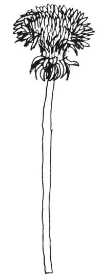

Kuşkusuz konuşması için gerekli fizyolojik düzelme sağlanmıştı ama dili anlama ve kullanmayla ilgili becerilerinde bozukluklar vardı. Bir konuşma terapistinin de yardımlarıyla, bu becerisini geliştirmek üzere kendisi de çaba sarf etmeye başladı. Konuşma bozukluğu ve konuşmayı reddetmesi hastalığın etkisini daha da arttırmıştı. Şimdi konuşmasıyla ilgili ortaya çıkan yeni gelişmeler onun daha hızlı iyileşmesine sebep oluyordu. En iyimser olanımız bile José'nin normal bir şekilde asla konuşamayacağını biliyordu ama José hiç değilse basit ihtiyaçlarını gidermek üzere konuşabilecekti. Bunu o da biliyordu, bu yüzden bir yandan konuşmasını ilerletmek üzere çaba sarf ederken bir yandan da kendini ifade edebilmek üzere resim yapıyordu.
José ile ilgili son bir olay daha anlatacağım. José daha çok bir hapishane hücresini andıran odasından, eve benzer daha sakin bir odaya yerleştirildi. Bu oda pek az hastanenin sağlayabileceği türden özenli bir yerdi. Sıcak ve yakın bir ilgi görüyordu. Bu yeni odasının bulunduğu bölüme uğradığımda, heyecanla bana el salladı. Bu çok açık ve bana yönelik bir davranıştı. Bunu yapabileceğini hayal bile etmezdim. Kapalı kapıyı işaret ederek açmamı istedi, dışarıya çıkmak istiyordu.
Beni aşağıdaki, güneşli bahçeye götürdü. Bildiğim kadarıyla sekiz yaşından beri, kendi isteğiyle gitmemişti. Bu sefer kalemimi vermem gerekmedi, kendisinin vardı. Hastanenin etrafında dolaştık. José bazen gökyüzüne ve ağaçlara bakıyordu ama çoğunlukla yerdeki leylak ve sarı renkli yonca ve çiçeklere takılıyordu gözü. Bitkilerin şekillerine ve renklerine çok meraklıydı. Çarçabuk az rastlanan beyaz bir yonca buldu, ardından yine az rastlanan dört yapraklı bir yonca buldu. Yedi farklı ot çeşidi gördü, hepsini de arkadaşıymışçasına selamladı. Ama o kocaman sarı çiçekleri gördüğünde sevinçten uçtu. İşte bu onun çiçeğiydi. Hemen çizmek istedi. Yere çömeldi, elindeki çizim tahtasını yere koydu ve çiçeği çizmeye başladı.
Bu onun uzun yıllardan beri, babasıyla eskizler çizdiği çocukluk döneminden beri çizdiği ilk canlı doğa resmiydi. Aslının aynı, canlı mükemmel bir çizimdi. Bu, gerçekliğe duyduğu sevginin bir ifadesiydi. Bu çizim ortaçağ botanikçilerinin çizdiklerine benzer türden şeylerdi. José'nin botanik bilgisi olmamasına rağmen en az onlar kadar doğru ve canlı çizebiliyordu. Zihni, kavramsal olan, soyut olan şeyleri anlamaya uygun olarak yapılanmamıştı. Bu yoldan gerçekliğe ulaşamıyordu. Onun yolu doğadan geçmekteydi. Gerçekliğe ve doğruya doğayla kavuşuyordu.

Otistik kişinin soyutluğa ve kategorik olan bilgilere ilgisi yoktur. Onun için her şey somut ve tekildir. Bunun nedeni ne olursa olsun, durum budur. Geneli kavrayamayan otistiğin dünyası tamamıyla ufak parçacıklardan oluşmuştur. Onlar tek bir evrende değil, William James'in dediği gibi birçok evrende birden yaşarlar. Onların usu bilimsel olan bilginin, genellemenin tam zıddı bir uçta bulunmaktadır. Ama o uç da aynı ölçüde gerçektir. Böylesi bir us Borges'in 'Unutulmaz Funes' isimli hikâyesinde resmedilmiştir;
Unutmayalım ki genelleme yaparak düşünme becerisi olmayan Platonik biriydi. Funes'in o kalabalık dünyasında sadece detaylar vardı. Şimdiye kadar hiç kimse gerçekliğin ateşini gece ve gündüz hiç yorulmadan zavallı Ireneo kadar göğüslememiştir...
José de , Borges'in Ireneo'suyla aynı durumdadır. Ama durumu yine de zavallı olmasını gerektirmez. Belki de bu detaylarda , bu parçacıklarda derin hazlar gizlidir.
José hem otistik hem de basit ve yalın bir kişiydi. Şekillere, formlara, somuta dair becerisi onu aynı zamanda doğuştan yetenekli bir artist yapıyordu. Dünyayı formlar halinde kavrıyor ve onları kopya ediyordu. Bu yeteneğinin yanında figüratif bir becerisi de vardı. Bir çiçeği, bir balığı tıpatıp benzer çizebildiği gibi, bir duygunun, bir rüyanın temsili olarak da çizebiliyordu. Bir de otistiklerin hayal gücünden ve sanattan uzak olduklarını söylerler!
José gibi insanlar yok sayılır. Nadia gibi otistik çocuk sanatçıların varlığı yadsınır. Gerçekten bu kadar ender rastlanan kişiler midir bu insanlar, yoksa atlanırlar mı? Nigel Dennis, New York Review of Books’ ta 4 Mayıs 1978 de yayımlanan mükemmel makalesinde Nadia'yı anlatmaktadır. Makalesinde, dünyada Nadia gibi kimbilir kaç insanın durumunun atlandığını, dikkate alınmadığını, ürettikleri şeylerin çöp tenekesine layık görüldüğünü veya José'ye yapıldığı gibi yeteneklerine garip, ilgisiz, izole beceriler olarak bakıldığını sormaktadır. Otistik artist veya otistik hayal gücü hiç de nadir rastlanılan bir şey değildir. Geçmiş yıllarda düzinelerce örneğine rastladım hem de hiç çaba sarf etmeden!
Otistik kişiler, doğaları gereği etki altında kalmadıkları için özgündürler. Görüntü kendi imgelemlerinden çıktığı için tamamıyla özgündür.
Bir zamanlar otizm, çocukluk dönemi şizofrenisi olarak değerlendirilirdi. Aslında durum tam tersidir. Şizofrenler her zaman dış dünyanın etkisinden yakınırlar; güçsüz, etkisiz, kendi olamayan, başkaları tarafından oynatılan insanlardır. Öyle olduklarına inanırlar. Otistikler ise hiç etkilenmemekten, dış dünyadan tamamıyla yalıtılmış olmaktan muzdariptirler.
Donne, "Hiç kimse kendi başına bir ada değildir." diye yazmıştır ama otistiğin durumu işte budur, anakaradan tamamıyla kopmuş bir ada! Klasik otizm vakasında, üç yaşından itibaren bu kopma gerçekleşir ve otistiğin temelde anakara ile ilgili hiçbir anısı belleğinde yer almaz. José gibi daha ilerki yaşlarda, beyinle ilgili bir rahatsızlığa bağlı olarak ortaya çıkan sekonder otizmde anakara ile ilgili bazı anılar ve belki de bir nostalji mevcuttur. Bu José'nin diğerlerine göre daha ulaşılabilir olmasının nedenlerindendir.
Peki kopmak ve bir ada olmak, ölmek midir? Öyle olması gerekmez. Toplum ve kültürle yatay bağların kaybı, belki de başka insanlar tarafından hiç dokunulmamış olan doğa ve gerçeklikle dikey bağlantılar kurmayı olanaklı hale getirmektedir. José'deki dikey bağlantı, algılamalarına ve resimlerine incelikli ve berrak bir şekilde yansıyordu.
Bütün bunlar bizi şu soruya yöneltiyor; tek başına bir ada olan insanın anakarada bir yeri var mıdır? 'Anakara' bu adaya uyum sağlayabilir mi? Toplumun dâhilere karşı gösterdiği sosyal ve kültürel tepkilerle, bu durum arasında benzerlikler vardır. Kuşkusuz tüm otistiklerin dâhi olduklarını iddia etmiyorum, sadece sıradışı ve garip olma özelliğinde birleşmektedirler. Soruyu José için soracak olursak; gelecek José için neler sunacaktır? Dünyada onun için bir yer var mıdır? Hem otonomisini kullanabileceği hem de izole kalabileceği bir yer bulunabilir mi? Bitki sevgisi ve incelikli gözlem kabiliyetiyle botanik çalışmaları için illüstrasyonlar, zooloji veya anatomi kitapları için resimlemeler yapabilir miydi? Bir sonraki resmi, ona gösterdiğim bir kitaptan çizmişti. Bu resim epitelium isimli doku parçasından bir kesite aitti. Bilimsel gezilere katılıp resimler çizebilir miydi? Gördüğü şeyleri tam bir konsantrasyon içinde çiziyordu, bu yeteneği bu gibi durumlarda faydalı olabilirdi.
Acaba bu yeteneği, onun masal kitaplarını veya İncil ile ilgili hikâyeleri ve mitleri resimlendirmesini sağlar mıydı? Okuyup yazamadığından harfleri sadece güzel şekiller olarak görüyordu. Acaba kitapların büyük harflerini resmedemez miydi? Kiliseler için mozaikten ve boyanmış ağaçtan mihraplar yapmıştı. Mezartaşlarına çok özgün harfler kazımıştı. Şimdiki görevi, hastane içindeki ilanları resmetmekti. Bütün bu işleri çok iyi bir şekilde yapıyordu. Ama bunun için onu anlayıp yönlendirecek birisi gerekiyordu. Aksi takdirde, yıldızların gökte durduğu gibi öylece duracaktı. Diğer otistikler gibi bir hastanenin arka koğuşlarından birinde ilgisizlikten çürüyüp gidecekti.